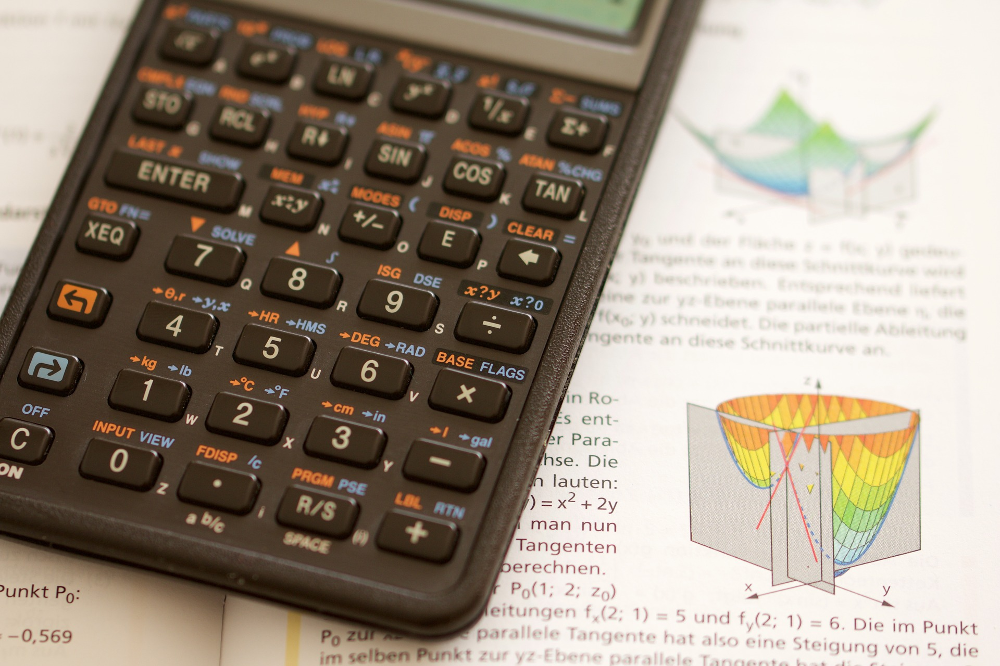
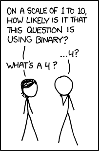
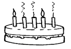
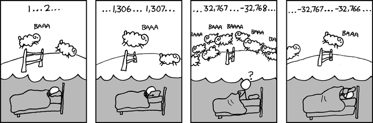

Data representation
A1.2 Data representation and computer logic
A1.2.1 Describe the principal methods of representing data.

In this section, we will look at how computers represent numbers. To begin with, we'll revise how the base 10 number system that we use every day works, and then look at binary, which is base 2. After that, we'll look at some other charactertistics of numbers that computers must deal with, such as negative numbers and numbers with decimal points.
Understanding the base 10 number system
The number system that humans normally use is in base 10 (also known as decimal). It's worth revising quickly, because binary numbers use the same ideas as decimal numbers, just with fewer digits!
The base 10 (decimal) system is sometimes called denary, which is more consistent with the name binary for the base 2 system. The word »denary« also refers to the Roman denarius coin, which was worth ten asses (an »as« was a copper or bronze coin). The term »denary« seems to be used mainly in the UK; in the US, Australia and New Zealand the term »decimal« is more common.
In decimal, the value of each digit in a number depends on its place in the number. For example, in 123 €, the 3 represents 3 €, whereas the 1 represents 100 €. Each place value in a number is worth 10 times more than the place value to its right, i.e. there are the »ones«, the »tens«, the »hundreds«, the »thousands«, the »ten thousands«, the »hundred thousands«, the »millions«, and so on. Also, there are 10 different digits (0, 1, 2, 3, 4, 5, 6, 7, 8, 9) that can be at each of those place values.
Base 10 calculator
| 0 × 103 | + | 0 × 102 | + | 0 × 101 | + | 0 × 100 | = | 0 |
| 0 × 1000 | + | 0 × 100 | + | 0 × 10 | + | 0 × 1 | = | 0 |
| 0 | + | 0 | + | 0 | + | 0 | = | 0 |
If you were only able to use one digit to represent a number, then the largest number would be 9. After that, you need a second digit, which goes to the left, giving you the next ten numbers (10, 11, 12, ... 19). It's because we have 10 digits that each one is worth 10 times as much as the one to its right.
You may have encountered different ways of expressing numbers using "expanded form". For example, if you want to write the number 90328 in expanded form you might have written it as:
90328 = 90000 + 300 + 20 + 8
A more sophisticated way of writing it is:
90328 = (9 × 10000) + (0 × 1000) + (3 × 100) + (2 × 10) + (8 × 1)
If you've learnt about exponents, you could write it as:
90328 = (9 × 104) + (0 × 103) + (3 × 102) + (2 × 101) + (8 × 100)
Remember that any number to the power of 0 is 1, i.e. the 8 × 100 is 8, because the 100 is 1.
Key ideas
- Decimal has 10 digits – 0, 1, 2, 3, 4, 5, 6, 7, 8, 9.
- A place is the place in the number that a digit is, i.e. ones, tens, hundreds, thousands, and so on. For example, in the number 90328, 3 is in the »hundreds« place, 2 is in the »tens« place, and 9 is in the »ten thousands« place.
- Numbers are made with a sequence of digits.
- The right-most digit is the one that's worth the least (in the "ones" place).
- The left-most digit is the one that's worth the most.
- Because we have 10 digits, the digit at each place is worth 10 times as much as the one immediately to the right of it.
All this probably sounds really obvious, but it is worth thinking about consciously, because binary numbers have the same properties.
Representing whole numbers in binary
As discussed earlier, computers can only store information using bits, which have 2 possible states. This means that they cannot represent base 10 numbers using digits 0 to 9, the way we write down numbers in decimal. Instead, they must represent numbers using just 2 digits – 0 and 1.
Binary works in a very similar way to decimal, even though it might not initially seem that way. Because there are only 2 digits, this means that each digit is 2 times the value of the one immediately to the right.
The interactive below illustrates how this binary number system represents numbers. Have a play around with it to see what patterns you can see.
Base 2 calculator
| 0 × 25 | + | 0 × 24 | + | 0 × 23 | + | 0 × 22 | + | 0 × 21 | + | 0 × 20 | = | 0 |
| 0 × 32 | + | 0 × 16 | + | 0 × 8 | + | 0 × 4 | + | 0 × 2 | + | 0 × 1 | = | 0 |
| 0 | + | 0 | + | 0 | + | 0 | + | 0 | + | 0 | = | 0 |
Find the representations of 4, 7, 12, and 57 using the interactive.
What is the largest number you can make with the interactive? What is the smallest? Is there any integer value in between the biggest and the smallest that you can’t make? Are there any numbers with more than one representation? Why / why not?
- 000000 in binary, 0 in decimal is the smallest number.
- 111111 in binary, 63 in decimal is the largest number.
- All the integer values (0, 1, 2... 63) in the range can be represented (and there is a unique representation for each one). This is exactly the same as decimal!
You have probably noticed from the interactive that when set to 1, the leftmost bit (the »most significant bit«) adds 32 to the total, the next adds 16, and then the rest add 8, 4, 2, and 1 respectively. When set to 0, a bit does not add anything to the total. So the idea is to make numbers by adding some or all of 32, 16, 8, 4, 2, and 1 together, and each of those numbers can only be included once.

Source
Choose a number less than 61 (perhaps your house number, your age, a friend's age, or the day of the month you were born on), set all the binary digits to zero, and then start with the left-most digit (32), trying out if it should be zero or one. See if you can find a method for converting the number without too much trial and error. Try different numbers until you find a quick way of doing this.
Figure out the binary representation for 23 without using the interactive? What about 4, 0, and 32? Check all your answers using the interactive to verify they are correct.
Can you figure out a systematic approach to counting in binary? i.e. start with the number 0, then increment it to 1, then 2, then 3, and so on, all the way up to the highest number that can be made with the 7 bits. Try counting from 0 to 16, and see if you can detect a pattern. Hint: Think about how you add 1 to a number in base 10. e.g. how do you work out 7 + 1, 38 + 1, 19 + 1, 99 + 1, 230899999 + 1, etc? Can you apply that same idea to binary?
Using your new knowledge of the binary number system, can you figure out a way to count to higher than 10 using your 10 fingers? What is the highest number you can represent using your 10 fingers? What if you included your 10 toes as well (so you have 20 fingers and toes to count with).
The interactive exercise above used exactly 6 bits. In practice, we can use as many or as few bits as we need, just like we do with decimal. For example, with 5 bits, the place values would be 16, 8, 4, 2 and 1, so the largest value is 11111 in binary, or 31 in decimal. Representing 14 with 5 bits would give 01110.
Write representations for the following. If it is not possible to do the representation, put »Impossible«.
- Represent 101 with 7 bits
- Represent 28 with 10 bits
- Represent 7 with 3 bits
- Represent 18 with 4 bits
- Represent 28232 with 16 bits
An important concept with binary numbers is the range of values that can be represented using a given number of bits. When we have 8 bits the binary numbers start to get useful – they can represent values from 0 to 255, so it is enough to store someone's age, the day of the month, and so on.
Groups of 8 bits are so useful that they have their own name: a byte. Computer memory and disk space are usually divided up into bytes, and bigger values are stored using more than one byte. For example, two bytes (16 bits) are enough to store numbers from 0 to 65,535. Four bytes (32 bits) can store numbers up to 4,294,967,295. You can check these numbers by working out the place values of the bits. Every bit that's added will double the range of the number.
Other groupings include:
- Nibble – 4 bits (half a byte)
- Byte (B) – 8 bits
- Kilobyte (kB) – 1024 bytes (or 1024 x 8 bits)
- Megabyte (MB) – 1024 kilobytes (or 1,048,576 bytes)
- Gigabyte (GB) – 1024 megabytes
- Terabyte (TB) – 1024 gigabytes
- Petabyte (PB) – 1024 terabytes
In practice, computers store numbers with either 16, 32, or 64 bits. This is because these are full numbers of bytes (a byte is 8 bits), and makes it easier for computers to know where each number starts and stops.
Candles on birthday cakes use the base 1 numbering system, where each place is worth 1 more than the one to its right. For example, the number 3 is 111, and 10 is 1111111111. This can cause problems as you get older – if you've ever seen a cake with 100 candles on it, you'll be aware that it's a serious fire hazard.
Luckily it's possible to use binary notation for birthday candles – each candle is either lit or not lit. For example, if you are 18, the binary notation is 10010, and you need 5 candles (with only two of them lit).

It's a lot smarter to use binary notation on candles for birthdays as you get older, as you don't need as many candles.
Shorthand for binary numbers – Hexadecimal
Most of the time binary numbers are stored electronically, and we don't need to worry about making sense of them. But sometimes it's useful to be able to write down and share numbers, such as the unique identifier assigned to each digital device (MAC address), or the colours specified in an HTML page.
Writing out long binary numbers is tedious – for example, suppose you need to copy down the 16-bit number 0101001110010001. A widely used shortcut is to break the number up into 4-bit groups (in this case, 0101 0011 1001 0001), and then write down the digit that each group represents (giving 5391). There's just one small problem: each group of 4 bits can go up to 1111, which is 15, and the digits only go up to 9.
The solution is simple: we introduce symbols for the digits from 1010 (10) to 1111 (15), which are just the letters A to F. So, for example, the 16-bit binary number 1011 1000 1110 0001 can be written more concisely as B8E1. The »B« represents the binary 1011, which is the decimal number 11, and the E represents binary 1110, which is decimal 14.
Because we now have 16 digits, this representation is base 16, and known as hexadecimal (or hex for short). Converting between binary and hexadecimal is very simple, and that's why hexadecimal is a very common way of writing down large binary numbers.
Here's a full table of all the 4-bit numbers and their hexadecimal digit equivalent:
| Binary | Octal | Denary / Decimal | Hexadecimal |
|---|---|---|---|
| 0000 | 0 | 0 | 0 |
| 0001 | 1 | 1 | 1 |
| 0010 | 2 | 2 | 2 |
| 0011 | 3 | 3 | 3 |
| 0100 | 4 | 4 | 4 |
| 0101 | 5 | 5 | 5 |
| 0110 | 6 | 6 | 6 |
| 0111 | 7 | 7 | 7 |
| 1000 | 10 | 8 | 8 |
| 1001 | 11 | 9 | 9 |
| 1010 | 12 | 10 | A |
| 1011 | 13 | 11 | B |
| 1100 | 14 | 12 | C |
| 1101 | 15 | 13 | D |
| 1110 | 16 | 14 | E |
| 1111 | 17 | 15 | F |
For example, the largest 8-bit binary number is 11111111. This can be written as FF in hexadecimal. Both of those representations mean 255 in our conventional decimal system (you can check that by converting the binary number to decimal).
Which notation you use will depend on the situation; binary numbers represent what is actually stored, but can be confusing to read and write; hexadecimal numbers are a good shorthand of the binary; and decimal numbers are used if you're trying to understand the meaning of the number or doing normal math. All three are widely used in computer science.
It is important to remember though, that computers only represent numbers using binary. They cannot represent numbers directly in decimal or hexadecimal.
Base converter
The converter allows you to convert the same number between different bases. You can set the length from 8 to 32 bits. The converter will also display the corresponding ASCII character for 8 bits.
Set or clear bits directly
Converting decimal number to binary number.
Converting decimal number to hexadecimal number.
Converting binary number to decimal number.
Converting binary number to hexadecimal number.
Converting hexadecimal number to binary number.
Converting hexadecimal number to decimal number.
Computers representing numbers in practice
A common place that numbers are stored on computers is in spreadsheets or databases. These can be entered either through a spreadsheet program or database program, through a program you or somebody else wrote, or through additional hardware such as sensors, collecting data such as temperatures, air pressure, or ground shaking.
Some of the things that we might think of as numbers, such as the telephone number (03) 555-1234, aren't actually stored as numbers, as they contain important characters (like dashes and spaces) as well as the leading 0 which would be lost if it was stored as a number (the above number would come out as 35551234, which isn't quite right). These are stored as text, which is discussed in the next unit.
On the other hand, things that don't look like a number (such as »30 January 2014«) are often stored using a value that is converted to a format that is meaningful to the reader (try typing two dates into Excel, and then subtract one from the other – the result is a useful number). In the underlying representation, a number is used. Program code is used to translate the underlying representation into a meaningful date on the user interface.
The difference between two dates in Excel is the number of days between them; the date itself (as in many systems) is stored as the amount of time elapsed since a fixed date (such as 1 January 1900). You can test this by typing a date like »1 January 1850« – chances are that it won't be formatted as a normal date. Likewise, a date sufficiently in the future may behave strangely due to the limited number of bits available to store the date.
Numbers are used to store things as diverse as dates, student marks, prices, statistics, scientific readings, sizes and dimensions of graphics.
The following issues need to be considered when storing numbers on a computer:
- What range of numbers should be able to be represented?
- How do we handle negative numbers?
- How do we handle decimal points or fractions?
How many bits are used in practice?
In practice, we need to allocate a fixed number of bits to a number, before we know how big the number is. This is often 32 bits or 64 bits, although can be set to 16 bits, or even 128 bits, if needed. This is because a computer has no way of knowing where a number starts and ends, otherwise.
Any system that stores numbers needs to make a compromise between the number of bits allocated to store the number, and the range of values that can be stored.
In some systems (like the Java and C programming languages and databases) it's possible to specify how accurately numbers should be stored; in others it is fixed in advance (such as in spreadsheets).
Some are able to work with arbitrarily large numbers by increasing the space used to store them as necessary (e.g. integers in the Python programming language). However, it is likely that these are still working with a multiple of 32 bits (e.g. 64 bits, 96 bits, 128 bits, 160 bits, etc). Once the number is too big to fit in 32 bits, the computer would reallocate it to have up to 64 bits.
In some programming languages there isn't a check for when a number gets too big (overflows). For example, if you have an 8-bit number using two's complement, then 01111111 is the largest number (127), and if you add one without checking, it will change to 10000000, which happens to be the number -128. (Don't worry about two's complement too much, it's covered later in this section.) This can cause serious problems if not checked for, and is behind a variant of the Y2K problem, called the Year 2038 problem, involving a 32-bit number overflowing for dates on Tuesday, 19 January 2038.

Source
On tiny computers, such as those embedded inside your car, washing machine, or a tiny sensor that is barely larger than a grain of sand, we might need to specify more precisely how big a number needs to be. While computers prefer to work with chunks of 32 bits, we could write a program (as an example for an earthquake sensor) that knows the first 7 bits are the lattitude, the next 7 bits are the longitude, the next 10 bits are the depth, and the last 8 bits are the amount of force.
Even on standard computers, it is important to think carefully about the number of bits you will need. For example, if you have a field in your database that could be either »0«, »1«, »2«, or »3« (perhaps representing the four bases that can occur in a DNA sequence), and you used a 64 bit number for every one, that will add up as your database grows. If you have 10,000,000 items in your database, you will have wasted 62 bits for each one (only 2 bits is needed to represent the 4 numbers in the example), a total of 620,000,000 bits, which is around 74 MB. If you are doing this a lot in your database, that will really add up – human DNA has about 3 billion base pairs in it, so it's incredibly wasteful to use more than 2 bits for each one.
And for applications such as Google Maps, which are storing an astronomical amount of data, wasting space is not an option at all!
Representing negative numbers in practice
The binary number representation we have looked at so far allows us to represent positive numbers only. In practice, we will want to be able to represent negative numbers as well, such as when the balance of an account goes to a negative amount, or the temperature falls below zero. In our normal representation of base 10 numbers, we represent negative numbers by putting a minus sign in front of the number. But in binary, is it this simple?
We will look at two possible approaches: Adding a simple sign bit, much like we do for decimal, and then a more useful system called two's complement.
Using a simple sign bit
On a computer we don’t have minus signs for numbers (it doesn't work very well to use the text based one when representing a number because you can't do arithmetic on characters), but we can do it by allocating one extra bit, called a sign bit, to represent the minus sign. Just like with decimal numbers, we put the negative indicator on the left of the number – when the sign bit is set to »0«, that means the number is positive and when the sign bit is set to »1«, the number is negative (just as if there were a minus sign in front of it).
For example, if we wanted to represent the number 41 using 7 bits along with an additional bit that is the sign bit (to give a total of 8 bits), we would represent it by 00101001. The first bit is a 0, meaning the number is positive, then the remaining 7 bits give 41, meaning the number is +41. If we wanted to make −59, this would be 10111011. The first bit is a 1, meaning the number is negative, and then the remaining 7 bits represent 59, meaning the number is −59.
Using 8 bits as described above (one for the sign, and 7 for the actual number), what would be the binary representations for 1, −1, −8, 34, −37, −88, and 102?
Going the other way is just as easy. If we have the binary number 10010111, we know it is negative because the first digit is a 1. The number part is the next 7 bits 0010111, which is 23. This means the number is −23.
What would the decimal values be for the following, assuming that the first bit is a sign bit?
- 00010011
- 10000110
- 10100011
- 01111111
- 11111111
But what about 10000000? That converts to −0. And 00000000 is +0. Since −0 and +0 are both just 0, it is very strange to have two different representations for the same number.
|
|
Binary number |
This is one of the reasons that we don't use a simple sign bit in practice. Instead, computers usually use a more sophisticated representation for negative binary numbers called two's complement.
Two's complement
There's an alternative representation called two's complement, which avoids having two representations for 0, and more importantly, makes it easier to do arithmetic with negative numbers.
Representing positive numbers with two's complement
Representing positive numbers is the same as the method you have already learnt. Using 8 bits,the leftmost bit is a zero and the other 7 bits are the usual binary representation of the number; for example, 1 would be 00000001, and 50 would be 00110010.
Representing negative numbers with two's complement
This is where things get more interesting. In order to convert a negative number to its two's complement representation, use the following process:
- Convert the number to binary (don't use a sign bit, and pretend it is a positive number).
- Invert all the digits (i.e. change 0's to 1's and 1's to 0's).
- Add 1 to the result (Adding 1 is easy in binary; you could do it by converting to decimal first, but think carefully about what happens when a binary number is incremented by 1 by trying a few; there are more hints in the panel below).
For example, assume we want to convert −118 to its two's complement representation. We would use the process as follows:
- The binary number for 118 is 01110110.
- 01110110 with the digits inverted is 10001001.
- 10001001 + 1 is 10001010.
Therefore, the two's complement representation for −118 is 10001010.
|
|
Binary number Inverted number Complementary number |
The rule for adding one to a binary number is pretty simple, so we'll let you figure it out for yourself. First, if a binary number ends with a 0 (e.g. 1101010), how would the number change if you replace the last 0 with a 1? Now, if it ends with 01, how much would it increase if you change the 01 to 10? What about ending with 011? 011111?
The method for adding is so simple that it's easy to build computer hardware to do it very quickly.
What would be the two's complement representation for the following numbers, using 8 bits? Follow the process given in this section, and remember that you do not need to do anything special for positive numbers.
- 19
- −19
- 107
- −107
- −92
Converting a two's complement number back to decimal
In order to reverse the process, we need to know whether the number we are looking at is positive or negative. For positive numbers, we can simply convert the binary number back to decimal. But for negative numbers, we first need to convert it back to a normal binary number.
So how do we know if the number is positive or negative? It turns out (for reasons you will understand later in this section) that two's complement numbers that are negative always start in a 1, and positive numbers always start in a 0. Have a look back at the previous examples to double check this.
So, if the number starts with a 1, use the following process to convert the number back to a negative decimal number.
- Subtract 1 from the number.
- Invert all the digits.
- Convert the resulting binary number to decimal.
- Add a minus sign in front of it.
So if we needed to convert 11100010 back to decimal, we would do the following.
- Subtract 1 from 11100010, giving 11100001.
- Invert all the digits, giving 00011110.
- Convert 00011110 to a binary number, giving 30.
- Add a negative sign, giving −30.
Convert the following two's complement numbers to decimal.
- 00001100
- 10001100
- 10111111
How many numbers can be represented using two's complement?
While it might initially seem that there is no bit allocated as the sign bit, the left-most bit behaves like one. With 8 bits, you can still only make 256 possible patterns of 0's and 1's. If you attempted to use 8 bits to represent positive numbers up to 255, and negative numbers down to -255, you would quickly realise that some numbers were mapped onto the same pattern of bits. Obviously, this will make it impossible to know what number is actually being represented!
In practice, numbers within the following ranges can be represented. Unsigned range is how many numbers you can represent if you only allow positive numbers (no sign is needed), and two's complement range is how many numbers you can represent if you require both positive and negative numbers. You can work these out because the range of 8-bit values if they are stored using unsigned numbers will be from 00000000 to 11111111 (i.e. 0 to 255 in decimal), while the signed two's complement range is from 10000000 (the lowest number, -128 in decimal) to 01111111 (the highest number, 127 in decimal). This might seem a bit weird, but it works out really well because normal binary addition can be used if you use this representation even if you're adding a negative number.
| Number | Unsigned range | Two's complement range |
|---|---|---|
| 8 bit | 0 to 255 | -128 to 127 |
| 16 bit | 0 to 65,535 | -32,768 to 32,767 |
| 32 bit | 0 to 4,294,967,295 | −2,147,483,648 to 2,147,483,647 |
| 64 bit | 0 to 18,446,744,073,709,551,615 | −9,223,372,036,854,775,808 to 9,223,372,036,854,775,807 |
Adding negative binary numbers
Before adding negative binary numbers, we'll look at adding positive numbers. It's basically the same as the addition methods used on decimal numbers, except the rules are way simpler because there are only two different digits that you might add!
You've probably learnt about column addition. For example, the following column addition would be used to do 128 + 255.
When you go to add 5 + 8, the result is higher than 9, so you put the 3 in the one's column, and carry the 1 to the 10's column. Binary addition works in exactly the same way.
Adding positive binary numbers
If you wanted to add two positive binary numbers, such as 00001111 and 11001110, you would follow a similar process to the column addition. You only need to know 0+0, 0+1, 1+0, and 1+1, and 1+1+1. The first three are just what you might expect. Adding 1+1 causes a carry digit, since in binary 1+1 = 10, which translates to »0, carry 1« when doing column addition. The last one, 1+1+1 adds up to 11 in binary, which we can express as »1, carry 1«. For our two example numbers, the addition works like this:
Remember that the digits can be only 1 or 0. So you will need to carry a 1 to the next column if the total you get for a column is (decimal) 2 or 3.
Adding negative numbers with a simple sign bit
With negative numbers using sign bits like we did before, this does not work. If you wanted to add +11 (01011) and −7 (10111), you would expect to get an answer of +4 (00100).
Which is −2.
One way we could solve the problem is to use column subtraction instead. But this would require giving the computer a hardware circuit which could do this. Luckily this is unnecessary, because addition with negative numbers works automatically using two's complement!
Adding negative numbers with two's complement
For the above addition (+11 + −7), we can start by converting the numbers to their 5-bit two's complement form. Because 01011 (+11) is a positive number, it does not need to be changed. But for the negative number, 00111 (−7) (sign bit from before removed as we don't use it for two's complement), we need to invert the digits and then add 1, giving 11001.
Adding these two numbers works like this:
Any extra bits to the left (beyond what we are using, in this case 5 bits) have been truncated. This leaves 00100, which is 4, like we were expecting.
We can also use this for subtraction. If we are subtracting a positive number from a positive number, we would need to convert the number we are subtracting to a negative number. Then we should add the two numbers. This is the same as for decimal numbers, for example 5 − 2 = 3 is the same as 5 + (−2) = 3.
This property of two's complement is very useful. It means that positive numbers and negative numbers can be handled by the same computer circuit, and addition and subtraction can be treated as the same operation.
The idea of using a »complementary« number to change subtraction to addition can be seen by doing the same in decimal. The complement of a decimal digit is the digit that adds up to 10; for example, the complement of 4 is 6, and the complement of 8 is 2. (The word »complement« comes from the root »complete« – it completes it to a nice round number.)
Subtracting 2 from 6 is the same as adding the complement, and ignoring the extra 1 digit on the left. The complement of 2 is 8, so we add 8 to 6, giving (1)4.
For larger numbers (such as subtracting the two 3-digit numbers 255 − 128), the complement is the number that adds up to the next power of 10 i.e. 1000 − 128 = 872. Check that adding 872 to 255 produces (almost) the same result as subtracting 128.
Working out complements in binary is way easier because there are only two digits to work with, but working them out in decimal may help you to understand what is going on.
Using sign bits vs. using two's complement
We have now looked at two different ways of representing negative numbers on a computer. In practice, a simple sign bit is rarely used, because of having two different representations of zero, and requiring a different computer circuit to handle negative and positive numbers, and to do addition and subtraction.
Two's complement is widely used, because it only has one representation for zero, and it allows positive numbers and negative numbers to be treated in the same way, and addition and subtraction to be treated as one operation.
There are other systems such as »One's Complement« and »Excess-k«, but two's complement is by far the most widely used in practice.
Representing real numbers in binary
In real life we often encounter or deal with real numbers – numbers that have an integer part and a decimal part. Most computers have built-in (hardware) support for working with real numbers, which are represented by floating point. We will look at floating point representation in more detail below. However, floating point representation is not necessarily the only way to represent real numbers, as we can also use fixed point representation.
Fixed point representation of real numbers
Fixed point is very often used in digital signal processing and computer games, where efficiency is sometimes more important than accuracy. Fixed point calculations are much faster than floating point calculations.
Let's recall that a binary number 11001 has the following decimal value:
Now, if we divide the number 25 by 2, we get 12.5. How do we represent this number if we can only use integers for representation?
The essence of representing real numbers, such as 12.5, is the concept of the binary point. The binary point is like the decimal point in the decimal system, separating the integer part from the decimal part of a number.
The decimal point in the decimal system indicates the position in the number where we must multiply the coefficient by 100 = 1. In our example, in the number 12.5, we multiply the digit 2 by 100. But what happens to the digit 5, which is to the right of the decimal point? We know from experience that we must multiply it by 10−1. We know that the number »12.5« represents »twelve and a half«, since:
The same concept of the decimal point can be used to represent binary numbers, except that in this case it is called the »binary point«. As in the decimal system, the binary point represents the position in the number at which the coefficient must be multiplied by 20 = 1. All digits (or bits) to the left of the binary point are multiplied by increasing powers 20, 21, 22, 23 etc. The digits (or bits) to the right of the binary point are multiplied by decreasing powers 2−1, 2−2, 2−3 etc.
For example, the binary number 1100,1 represents the following decimal value:
Usually we don't even write the fixed point, but we agree on how many bits will represent the integer part and how many the decimal part of the number.
Let's look at an example where we want to write the number 118.45 with 16 bits so that 8 bits represent the integer part and 8 bits represent the decimal part of the number. We convert the number by converting the integer part of the number, to the left of the decimal point, separately and the decimal part, to the right of the decimal point, separately. We can use Horner's algorithm for the conversion.
118 = 59 × 2 + 0 59 = 29 × 2 + 1 29 = 14 × 2 + 1 14 = 7 × 2 + 0 7 = 3 × 2 + 1 3 = 1 × 2 + 1 1 = 0 × 2 + 1 ↑
0,45 × 2 = 0,90 → 0 ↓ 0,90 × 2 = 1,80 → 1 0,80 × 2 = 1,60 → 1 0,60 × 2 = 1,20 → 1 0,20 × 2 = 0,40 → 0 0,40 × 2 = 0,80 → 0 0,80 × 2 = 1,60 → 1 0,60 × 2 = 1,20 → 1
A real number in binary representation with a fixed point has the following form:
Negative real numbers are represented in binary form with a fixed point in the same way as positive real numbers, except that they are converted to binary complement at the end – similar to negative integers.
Floating point representation of real numbers
The fixed point representation of numbers is very limited when one tries to represent very large and very small numbers, so this representation is rarely used in practice.
In computers, we mostly encounter signed integers or real numbers, which are represented with floating point. The basis of this representation is scientific notation, or exponential notation.
Key idea
Floating point representation allows the representation of very large as well as very small numbers with the same number of bits, as the binary point position is virtually shifted by changing the value of the exponent. This also makes better use of the available positions in the representation.
The representation of a real number in scientific notation or in exponential notation looks like this:
where m represents the mantissa (or coefficient), B represents the base (or radix), and n represents the exponent. Changing the value of n moves the point along the mantissa to the left or right, so n essentially tells where the point is located.
This is how we write real numbers in binary (B = 2), decimal (B = 10) or any other base. The essence of representing a number in this notation is that the mantissa always has a point in a certain place, but the exponent changes. Usually we have one integer place, and the other places are intended for the fraction or non-integer part of the number. This form is called the normalized form. Otherwise, we speak of the denormalized form.
3,14159 0,007 1749,0 -36,9
3,14159 × 100 7,00000 × 10-3 1,74900 × 103 -3,69000 × 101
3,14159e0 7e-3 1,749e3 -3,69e1
In the same way, we also represent binary numbers in the scientific notation form:
In this notation m and n are binary digits.
Several different floating point notations are used, but since 1985 the notation specified by the ANSI/IEEE 754 standard has been dominant.
| s | E = n + offset | m |
The most commonly used representations of this standard are the single-precision and the double-precision representation.
The single-precision representation (32 bits) contains 1 bit for the sign s, 8 bits for the offset exponent E, and 23 bits for the mantissa m. The double-precision representation (64 bits) contains 1 bit for the sign s, 11 bits for the offset exponent E, and 52 bits for the mantissa m.
The exponent n is written with an offset of 127 in single precision. This means that the computer treats the value n as an exponent when it adds the value 127 (E = n + 127) to it. Thus, the exponent 0 is written as 127, or in binary as 01111111. This method allows the writing of exponents from −127 to +128. In double precision, the exponent n is written with an offset of 1023.
The mantissa m is always normalized first to obtain a sequence of bits 1.mmm...m so the first bit (which is always 1) is not included in the part of the mantissa m that is written. When a real number is written in the scientific notation, this first bit (and the binary point) is automatically added to the beginning of the mantissa.
Let's represent the number 183.625 using single-percision (
The sign of the number is positive, so the sign has the value of 0 (s = 0).
When converting a number, we convert the integer part 183 separately and the decimal part 0.625 separately.
The integer part 183 = 1011 0111.
Now we need to convert the decimal part 0.625 to binary:
0,625 × 2 = 1,25 → 1 ↓ 0,25 × 2 = 0,5 → 0 0,5 × 2 = 1,0 → 1
The decimal part 0.625 = 0.101
The number converted to fixed point binary is therefore 1011 0111.101.
In floating point notation, we must use the normalized form
We count how many places we need to move the binary number to the right (or the binary point to the left) to get the desired form. There are 7 shifts, so the exponent will also be n = 7. The floating point number is:
We also need to take into account the offset exponenmt format so we need to add 127 to it:
Since we do not write the first one in the mantissa (the one before the binary point), the final notation according to the ANSI/IEEE 754 standard is:
| 183.625 = | 0 | 1000 0110 | 0110 1111 0100 0000 0000 000 |
| sign | offset exponent | mantissa |
or:
0100 0011 0011 0111 1010 0000 0000 0000
IEEE 754 converter
The converter allows you to enter a real number in the field to display and convert between the real number and its IEEE 754 floating point representation.
Single precision (32-bit) representation